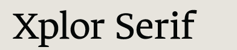
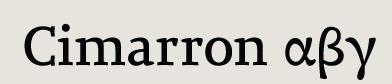
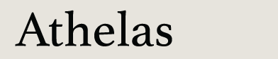
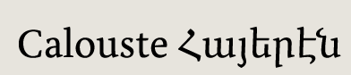
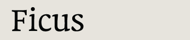

Michael Ives (UK) email
web
Xplor specimen

Ben Kiel (USA) email
web
Cimarron specimen
RoP

José Scaglione (Argentina) email
web
Athelas specimen
published by TypeTogether

Miguel Sousa (Portugal/USA) web
Calouste specimen
RoP

Malou Verlomme (France) web
Ficus
Thanks!
We would all like to thank the tutors and staff of the Department of Typography & Graphic Communication, University of Reading, especially Martin Andrews, Gerry Leonidas, James Mosley, Fiona Ross, Michael Twyman, and Gerard Unger. Cheers to guest lecturers John Downer, Victor Gaultney, John Hudson, Lawrence Penney, Thomas Phinney, Jean-François Porchez, and Richard Southall. For making us look good in print, thanks to the D&P Unit. To our department chef, Virginie Will, many thanks.
Additionally, Miguel Sousa would like to thank the Serviço de Belas Artes of Fundação Calouste Gulbenkian, Portugal.
Typeface designs © the respective authors, 2000–2010.
Website design and production © David Březina, 2007–2010.
The typeface used in the headline is Ronnia by TypeTogether.
Last update: 7 September 2010 — RSS feed